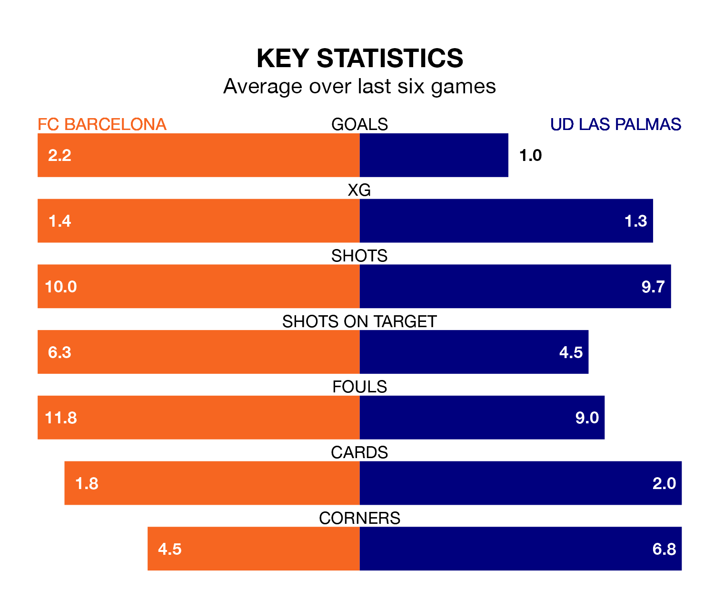

FC Barcelona face a challenge to maintain their high-scoring form at home against a tight UD Las Palmas defence on Saturday.
With 60 goals in 29 games, Barcelona are the second-highest scorers in La Liga ahead of the 8pm kick-off at Estadi Olímpic Lluís Companys.
They face a Las Palmas side who have scored 29 in as many matches, but conceded only 32 goals, putting them joint-fourth among the league's tightest defences – only Real Madrid, Athletic Club Bilbao and Real Sociedad have conceded fewer goals.
Barcelona are second in the table after 29 games, of which they have won 19 and drawn seven, earning 64 points.
Las Palmas are nine places behind Barça in 11th, with 10 wins and seven draws putting them on 37 points.
In the last 10 years, Barcelona and Las Palmas have played each other on seven occasions. Barcelona won six of them and they drew once.
On average, Barcelona scored 2.7 goals and Las Palmas 0.7 in those matches.
Their last meeting was on January 4, when Barcelona won 2-1 away.
With Marc-André ter Stegen between the sticks, the home side can rely on one of the league's safest pair of hands. He has kept 10 clean sheets in his 19 appearances this season, and only two other 'keepers – Athletic Club Bilbao's Unai Simón and Real Sociedad's Álex Remiro – have been able to prevent the opposition scoring on more occasions in La Liga.
In the visitors' net, Álvaro Vallés has seven clean sheets in 29 games. He has conceded a goal every 93 minutes, 20% more often than the 107 minutes between goals for ter Stegen.
Barcelona are in good form in La Liga, with four wins and two draws from their last six games.
With a win and two draws over that period, Las Palmas's form is much worse – they have taken five points from 18, compared to Barcelona's 14.
Barcelona's last match was on March 17, a 3-0 win against Atlético Madrid, with Fermín López, João Félix and Robert Lewandowski getting the goals for Barcelona.
Las Palmas lost 1-0 against Almería last time out, also on March 17.
Updated: 12:16 (UTC), 25/03/24